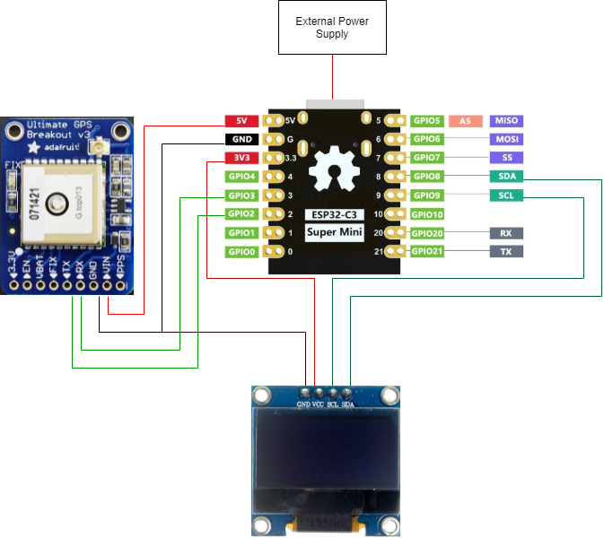

Implementation
Hardware development
Since this is a prototype development, in this project a breadboard and an external power supply is used first.
Proposed model architecture

- The SDA and SCL of the OLED display are connected to the SDA and SCL of the board for I2C serial communication.
- The TX and RX ports of the GPS module are connected to GPIO2 and GPIO3 of the board.
- The board uses USB type C for external power supply.
- The on-board 5 volts powers the GPS module and 3.3 volts powers the OLED display.
Software development
Since the ESP series development boards support Arduino for programming, they are developed using the Arduino IDE.
GPS Module and OLED display
Reading the GPS module directly will get its standard language NMEA1 (National Marine Electronics Association), which is a standard data format generally supported by manufacturers in the following form:
$GPGGA,110617.00,51XX.XXXXX,N,00009.XXXXX,W,1,05,2.68,129.0,M,50.1,M,,*42
$GPGSA,A,3,06,09,30,07,23,,,,,,,,4.43,2.68,3.53*02
$GPGSV,3,1,11,02,48,298,24,03,05,101,24,05,17,292,20,06,71,227,30*7C
$GPGSV,3,2,11,07,47,138,33,09,64,044,28,17,01,199,,19,13,214,*7C
$GPGSV,3,3,11,23,29,054,29,29,01,335,,30,29,167,33*4E
$GPGLL,51XX.XXXXX,N,00009.XXXXX,W,110617.00,A,A*70
$GPRMC,110618.00,A,51XX.XXXXX,N,00009.XXXXX,W,0.078,,030118,,,A*6A
$GPVTG,,T,,M,0.043,N,0.080,K,A*2C
We only need information about the time and location coordinates, and we only need to focus on the GPGGA column at the beginning. Where 110617.00 means 11:06:17 UTC, 51XX.XXXXXX, N means 51.XXXXXXXX degrees North, 00009.XXXXXX, W means 0.09XXXXX degrees West.
In this project, the TinyGPSPlus2 library and U8g23 library are used for quick development. The base code is as follows:
#include <Arduino.h>
#include <U8g2lib.h>
#ifdef U8X8_HAVE_HW_SPI
#include <SPI.h>
#endif
#ifdef U8X8_HAVE_HW_I2C
#include <Wire.h>
#endif
#include <TinyGPSPlus.h>
#include <SoftwareSerial.h>
static const int RXPin = 3, TXPin = 2;
static const uint32_t GPSBaud = 4800;
#define time_delay 2000
U8G2_SSD1306_128X64_NONAME_F_HW_I2C u8g2(U8G2_R0, /* reset=*/ U8X8_PIN_NONE, /* clock=*/ 9, /* data=*/ 8);
// The TinyGPSPlus object
TinyGPSPlus gps;
// The serial connection to the GPS device
SoftwareSerial ss(RXPin, TXPin);
int a;
void setup() {
u8g2.begin();
Serial.begin(115200);
ss.begin(GPSBaud);
a = 0;
}
void loop() {
u8g2.sendBuffer();
u8g2.clearBuffer();
u8g2_prepare();
a += 1;
char b = char(a);
u8g2.drawStr(80, 0, &b);
u8g2_GPS_data(gps.location.lat(), gps.location.lng());
printDateTime(gps.time);
smartDelay(1000);
if (millis() > 5000 && gps.charsProcessed() < 10)
u8g2_No_GPS_data();
u8g2.sendBuffer();
}
static void smartDelay(unsigned long ms)
{
unsigned long start = millis();
do
{
while (ss.available())
gps.encode(ss.read());
} while (millis() - start < ms);
}
void u8g2_prepare(void) {
u8g2.setFont(u8g2_font_6x10_tf);
u8g2.setFontRefHeightExtendedText();
u8g2.setDrawColor(1);
u8g2.setFontPosTop();
u8g2.setFontDirection(0);
}
void u8g2_No_GPS_data() {
u8g2.drawStr(0, 30, "No GPS data received");
}
void u8g2_GPS_data(float lat, float lng) {
u8g2.drawStr(0, 0,"Lat: ");
char buffer1[10];
dtostrf(lat, 6, 3, buffer1);
u8g2.drawStr(25,0,buffer1);
u8g2.drawStr(0, 10,"Lng: ");
char buffer2[10];
dtostrf(lng, 6, 3, buffer2);
u8g2.drawStr(25,10,buffer2);
}
static void printDateTime(TinyGPSTime &t)
{
if (!t.isValid())
{
u8g2.drawStr(0, 20,"******");;
}
else
{
char sz[32];
sprintf(sz, "%02d:%02d:%02d ", t.hour(), t.minute(), t.second());
u8g2.drawStr(0, 20,"Time: ");
u8g2.drawStr(36, 20, sz);
}
smartDelay(0);
}
Bluetooth Low Energy
Bluetooth Low Energy (BLE) is an energy-efficient variant of Bluetooth. The main application of BLE is the transmission of small amounts of data over short distances (low bandwidth). Unlike always-on Bluetooth, BLE is always in sleep mode unless a connection is initiated. This makes it consume very low power.
#include <BLEDevice.h>
#include <BLEUtils.h>
#include <BLEServer.h>
#define SERVICE_UUID "**************************"
#define CHARACTERISTIC_UUID "**************************"
void setup() {
Serial.begin(115200);
Serial.println("Starting BLE");
BLEDevice::init("Long name works now");
BLEServer *pServer = BLEDevice::createServer();
BLEService *pService = pServer->createService(SERVICE_UUID);
BLECharacteristic *pCharacteristic = pService->createCharacteristic(
CHARACTERISTIC_UUID,
BLECharacteristic::PROPERTY_READ |
BLECharacteristic::PROPERTY_WRITE
);
pCharacteristic->setValue("Hello World says Neil");
pService->start();
BLEAdvertising *pAdvertising = BLEDevice::getAdvertising();
pAdvertising->addServiceUUID(SERVICE_UUID);
pAdvertising->setScanResponse(true);
pAdvertising->setMinPreferred(0x12);
BLEDevice::startAdvertising();
}
void loop() {
delay(2000);
}